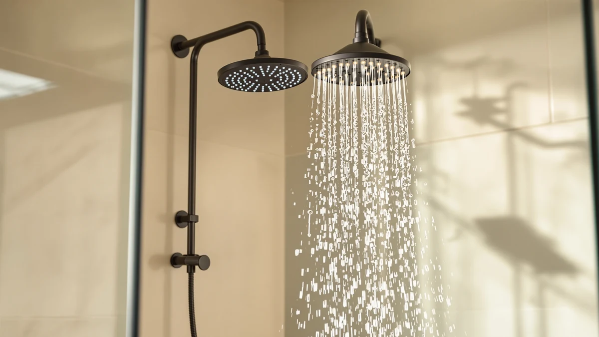

Delta Shower Heads vs Moen: Which Is Better? (2026)
Prices and picks verified as of September 2026. Independent, reader-supported reviews.


Things to Know Before You Buy
- Delta's In2ition and HydroRain heads combine a fixed shower head with a detachable handheld wand in one unit, useful for rinsing pets or cleaning the shower stall.
- Moen's Magnetix line uses a magnetic dock instead of a bracket clip, so the handheld head pulls free and reattaches without you lining up a latch.
- Both brands sell models under $50 and above $75; price tracks with spray-setting count and combo function more than brand name.
- Chrome is the standard finish for both brands, and both hold up well against hard water when you descale the nozzles on a regular schedule with vinegar.
- Neither brand publishes independent lab pressure ratings, so verified owner reviews on flow strength matter more than the marketing copy on the box.
Comparing delta shower heads vs moen for a bathroom remodel means choosing between two different engineering philosophies: Delta builds its lineup around pressure-boosting In2ition and HydroRain dual-function nozzles, while Moen centers its Engage series on a magnetic docking system that lets the handheld head snap on and off without a bracket.
Both brands sell reliable hardware in the $20 to $95 range, and the practical differences show up in spray pattern variety, how the handheld wand detaches, and how the finish holds up against hard water deposits over time. This guide compares the two lineups across build quality, price, and daily use, then breaks down which shopper each brand suits best.
Quick Answer
For most bathrooms, Moen shower heads win on convenience because the Magnetix magnetic release detaches with one hand, while Delta shower heads pull ahead when you want a stronger pressure boost from a 2-in-1 combo, since the In2ition and HydroRain lines are built around that dual-spray function. Weighing delta shower heads vs moen through verified owner reviews, both brands hold up for several years with basic descaling, so the right pick depends on how often you use the handheld function rather than which name is on the box.
What is Delta Shower Heads?
Delta has manufactured plumbing fixtures since 1954, and its shower head lineup splits into three practical categories: fixed heads, 2-in-1 combo units, and handheld wands sold separately. The In2ition series pairs a rain-style fixed head with a magnetic-mount handheld wand, so you get full coverage and spot rinsing from a single install. The HydroRain line follows the same 2-in-1 layout but adds more spray settings, typically five or six modes ranging from a full-coverage rain pattern to a concentrated massage spray. Delta also sells single-function chrome heads for buyers who do not need the handheld attachment and want a reliable fixed head at a lower price point.
Across the Delta shower heads catalog, the connection hardware uses a standard 1/2-inch NPT thread, so installation does not require special tools beyond plumber's tape and an adjustable wrench. The company backs most models with a limited lifetime warranty against manufacturing defects, covering the plastic housing and internal valve but not normal wear on the rubber spray nozzles. Reviewers consistently note that Delta's pressure-boosting nozzles perform well in homes with municipal water pressure below 60 psi, a common complaint in older buildings. The tradeoff is a narrower finish selection than some competitors, with chrome as the dominant option across the lineup.
What is Moen?
Moen has built its shower head reputation around the Magnetix system, which replaces the standard bracket clip with a magnetic dock. The handheld wand pulls free with one hand and snaps back into alignment on its own, a detail that matters if you are holding a child or a pet during bath time. The Engage line covers most of Moen's mid-range shower heads, including single fixed heads and 2-in-1 combo units like the 26009SRN that pair a rain-pattern fixed head with a Magnetix handheld wand. The Ignite series sits at the entry-level end of the catalog, with five-function fixed heads that skip the handheld attachment but still offer a range of spray patterns at a lower price.
Moen shower heads use the same 1/2-inch NPT thread as most US plumbing, and the company backs most of its shower hardware with a limited lifetime warranty covering finish and function defects. According to verified buyer reviews, the Magnetix dock holds securely enough to survive daily detachment and reattachment for several years without the magnet weakening noticeably. Chrome remains the primary finish, though select Engage models also ship in matte black and brushed nickel for buyers who want to match darker bathroom hardware.
Head-to-Head: Build Quality & Durability
Build quality between delta shower heads vs moen comes down to how each brand engineers the moving parts that wear out first: the handheld connector and the spray-setting dial. Delta's In2ition and HydroRain models use a plastic bracket clip to hold the handheld wand in its resting position, and that clip is the part most likely to loosen over a few years of daily use, especially if you force the wand back into place. Moen's Magnetix dock avoids that failure point by using a magnet instead of a mechanical latch, so there is no clip to wear out, though the magnet itself can lose a small amount of holding strength after many years of exposure to hot water and mineral buildup.
Both brands use ABS plastic housings with a chrome-plated finish, and neither brand's plastic cracks or discolors faster than the other in typical use. Owners report that the spray-selector dial on Delta's HydroRain heads feels slightly stiffer out of the box but loosens to a smoother action after the first few weeks, while Moen's Engage dial turns smoothly from day one but can develop a faint click after extended use. Neither issue affects water flow or function, and both brands cover the internal valve under warranty.
Head-to-Head: Price & Value
Price ranges overlap heavily between the two brands. Entry-level fixed heads from both Delta and Moen start around $20 to $35, and 2-in-1 combo units with a handheld wand climb to $75 to $95 depending on spray-setting count and finish. The Delta 6-Setting In2ition and the Moen 26009SRN Engage Magnetix sit close in price and function, both in the $75 to $91 range, which makes the choice more about the docking mechanism you prefer than which brand delivers more value. Moen's Ignite Chrome Five-function head at roughly $21 undercuts most of Delta's comparable single-function heads, making it the cheaper entry point if you do not need a handheld attachment. Comparing delta shower heads vs moen at the budget tier, Moen currently offers the lower floor price, while Delta's mid-tier HydroRain models cost slightly more for an equivalent spray-setting count.
Head-to-Head: Use Experience
Daily use is where the Magnetix docking system earns its reputation. You can grab the handheld wand on Moen shower heads with a wet, soapy hand and let go without aiming for a bracket, and the magnet pulls it back into place on its own. That convenience matters most in households with kids, pets, or anyone who showers with mobility limitations. Delta's bracket-clip system requires more precision to reseat the wand, though the clip holds the head at a fixed angle more reliably than a magnet once it locks in, which some owners prefer for a hands-free rinse.
Spray pattern variety leans slightly toward Delta on the higher-end HydroRain models, which offer up to six settings including a massage mode that reviewers describe as noticeably stronger than the standard rain pattern. Moen's Engage line typically tops out around five settings, with a similar spread between full coverage and a concentrated spray. Water pressure feels comparable between equivalent price tiers from both brands, and neither manufacturer publishes independent flow-rate testing, so the difference you notice at home depends more on your existing water pressure than on which logo is stamped on the head.
When to Choose Delta Shower Heads
Choose Delta shower heads if you want the strongest spray-setting variety in a 2-in-1 unit, particularly the HydroRain line's six-mode selector, or if you have a household member who prefers a fixed-angle handheld rinse that locks into a bracket rather than resting on a magnet. Delta also makes sense if you are matching existing Delta faucet hardware elsewhere in the bathroom, since the brand's chrome finish tends to match closely across product lines from the same manufacturing runs. Budget shoppers who only need a single-function fixed head, without the handheld attachment, will find Delta's basic chrome models competitively priced against Moen's equivalent tier. The main tradeoff is a bracket clip that needs occasional attention if it loosens, so plan on a five-minute tightening check once or twice a year to keep the handheld wand seated properly.
When to Choose Moen
Choose Moen shower heads if the handheld wand gets used constantly, for rinsing kids, pets, or cleaning the shower stall, since the Magnetix dock removes the hassle of lining up a bracket each time you grab it. Moen also wins for households on a tighter budget looking for a capable single-function head, given the Ignite series' low entry price without sacrificing spray-pattern variety. If you want a finish beyond chrome, Moen's broader selection of matte black and brushed nickel options across the Engage line gives more flexibility for matching newer bathroom fixtures. The one scenario where Moen makes less sense is if you specifically want the handheld wand to hold a fixed angle for hands-free rinsing, since a magnetic dock is designed for quick release rather than a locked position.
Our Top Picks
The three picks below cover what most shoppers weighing delta shower heads vs moen are actually looking for, from an everyday Magnetix upgrade to a budget-friendly fixed head.

Editor's Pick
Moen Engage Magnetix Chrome 3.5-Inch
The easiest upgrade for daily use, thanks to the one-handed magnetic release.
$41.99
Check Price on Amazon
Best Value
Moen 26009SRN Engage Magnetix 2-in-1
A full 2-in-1 setup with a rain head and detachable wand, priced close to Delta's comparable combo units.
$90.99
Check Price on Amazon
Premium Choice
Moen Ignite Chrome Five-function Shower
The lowest-cost option here, with five spray settings and no handheld attachment to maintain.
$21.28
Check Price on AmazonFrequently Asked Questions
Final Verdict
Weighing delta shower heads vs moen comes down to how you use the handheld function day to day. Pick Moen if you want the Magnetix magnetic dock's one-handed convenience and a lower entry price on the Ignite line. Pick Delta if you want more spray settings on a 2-in-1 combo and a bracket clip that locks the handheld wand at a fixed angle. Both brands hold up for years with basic maintenance, so match the pick to how your household actually showers rather than the logo on the box.